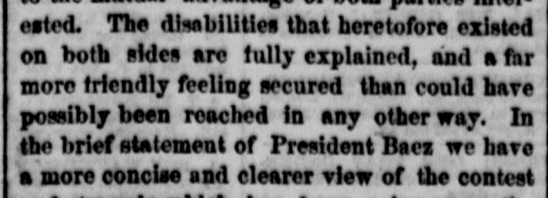
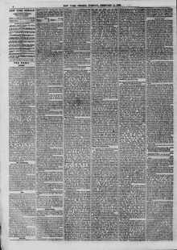

Secretary Seward, in return, gave a short, comprehensive and complete ideaEl secretario Seward, en respuesta, dio una idea breve, abarcadora y completa
The New York Herald. New York [N.Y.], February 6, 1866. Page 4. View the originalVer el original


See the full pageVer la página completaBased on the provided excerpt, President Baez provided a concise view of the contest and struggle on the island of St. Domingo, while Secretary Seward outlined U.S. progress following the rebellion that crushed the pro-slavery power. Seward explained that the abolition of slavery removed barriers to recognizing Liberia and Hayti and enabled the United States to extend fellowship to the republic of Dominica, which had been fighting monarchical influences.A tenor del extracto, el presidente Báez ofreció una sucinta panorámica de la contienda y los afanes librados en la isla de Santo Domingo, en tanto que el secretario Seward expuso los avances de los Estados Unidos tras sofocar la rebelión y aplastar el poder esclavista. Seward explicó que la abolición de la esclavitud derribó los obstáculos para el reconocimiento de Liberia y Haití y permitió a los Estados Unidos estrechar lazos de fraternidad con la república dominicana, la cual venía combatiendo las influencias monárquicas.
FULL TEXT:TEXTO COMPLETO:
to the mutual advantage of both parties interested. The disabilities that heretofore existed on both sides are fully explained, and a far more friendly feeling secured than could have possibly been reached in any other way. In the brief statement of President Baez we have a more concise and clearer view of the contestpara ventaja mutua de ambas partes interesadas. Las incapacidades que hasta ahora existían en ambas partes están plenamente explicadas, y se ha asegurado un sentimiento mucho más amistoso del que posiblemente podría haberse alcanzado de cualquier otro modo. En la breve exposición del presidente Báez tenemos una visión más concisa y más clara de la contienda
In this article, the newspaper calls the country 'Dominica.' It means the Dominican Republic, not the island of Dominica.En este artículo, el periódico llama al país «Dominica». Se refiere a la República Dominicana, no a la isla de Dominica.